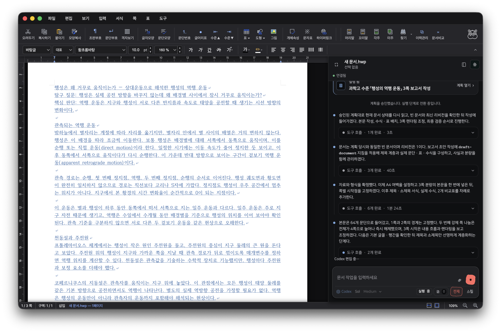
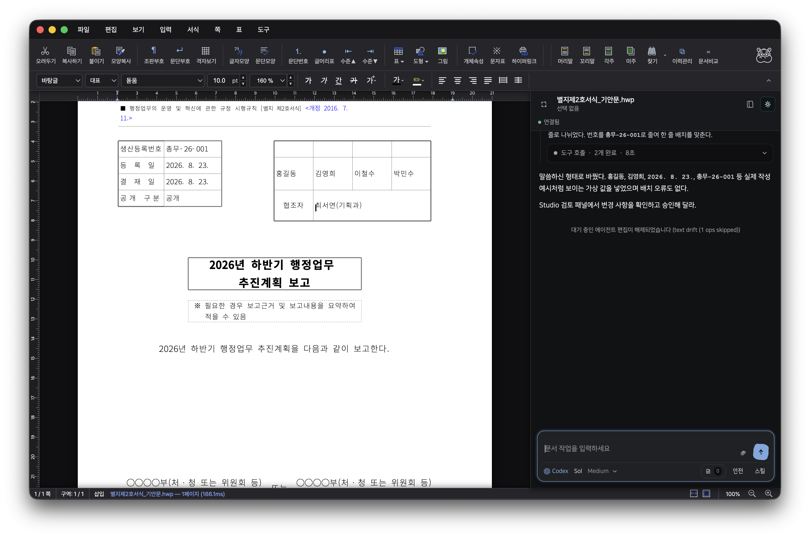
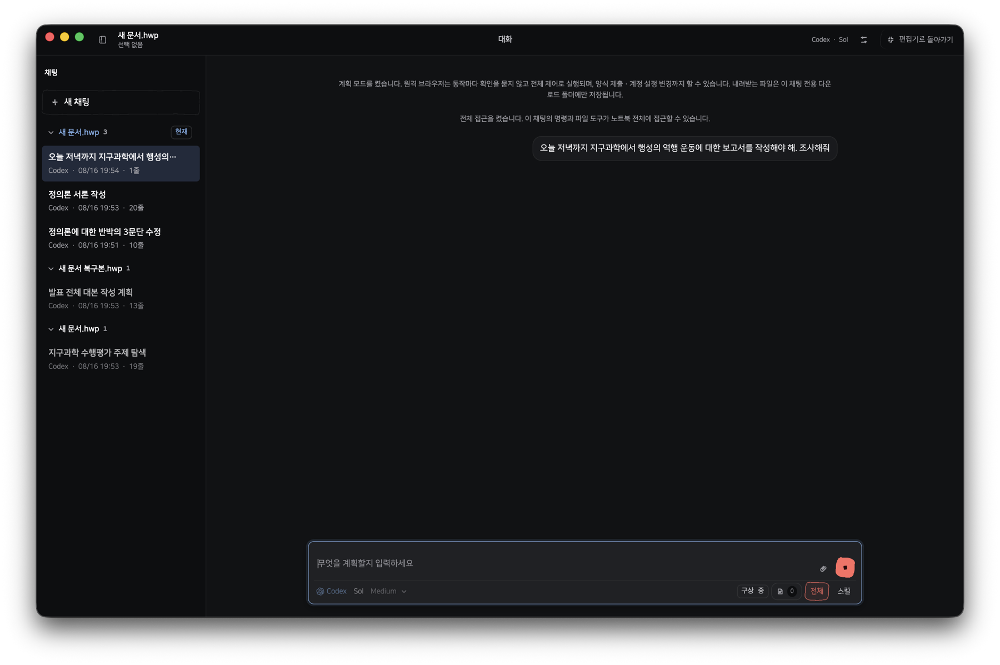
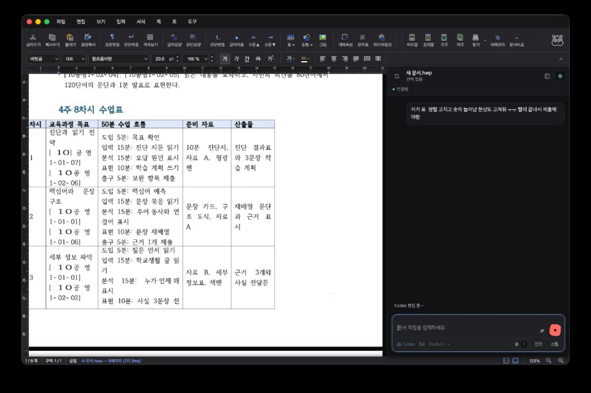
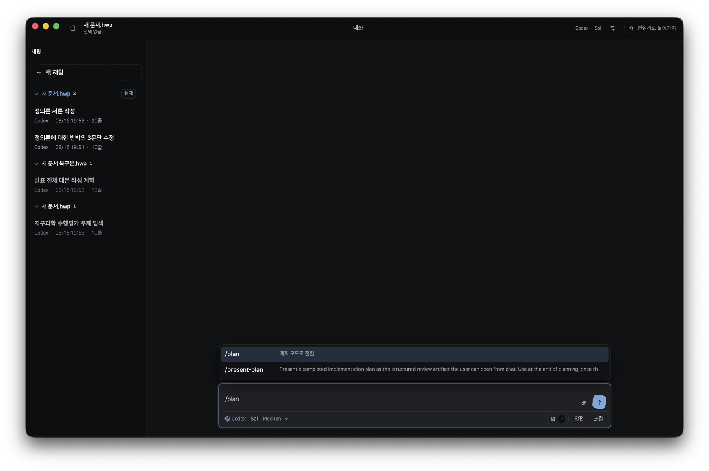
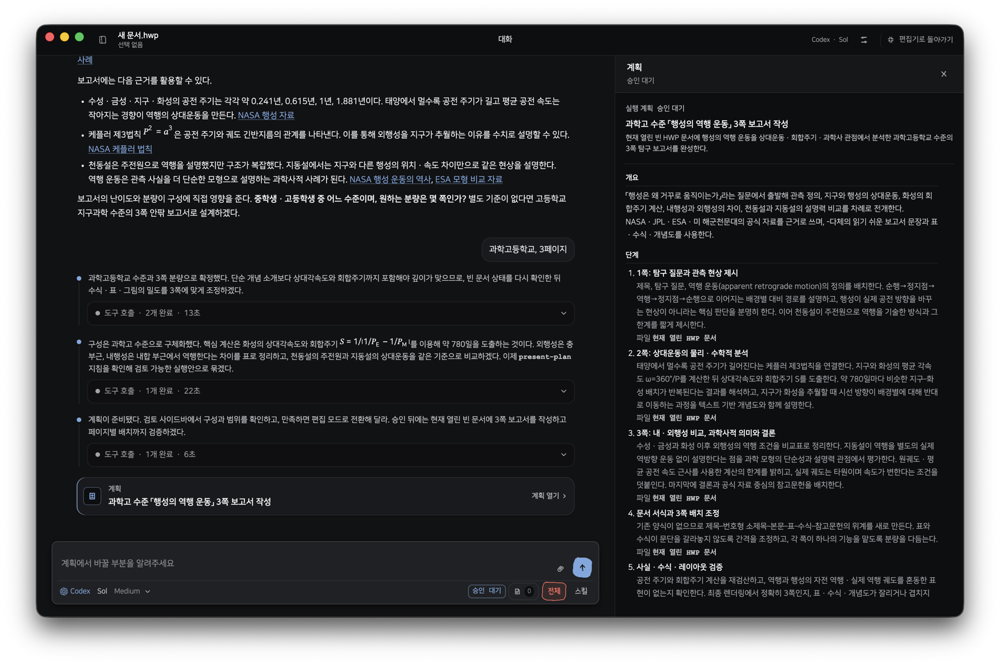
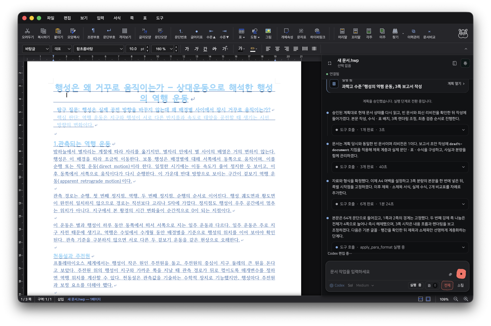
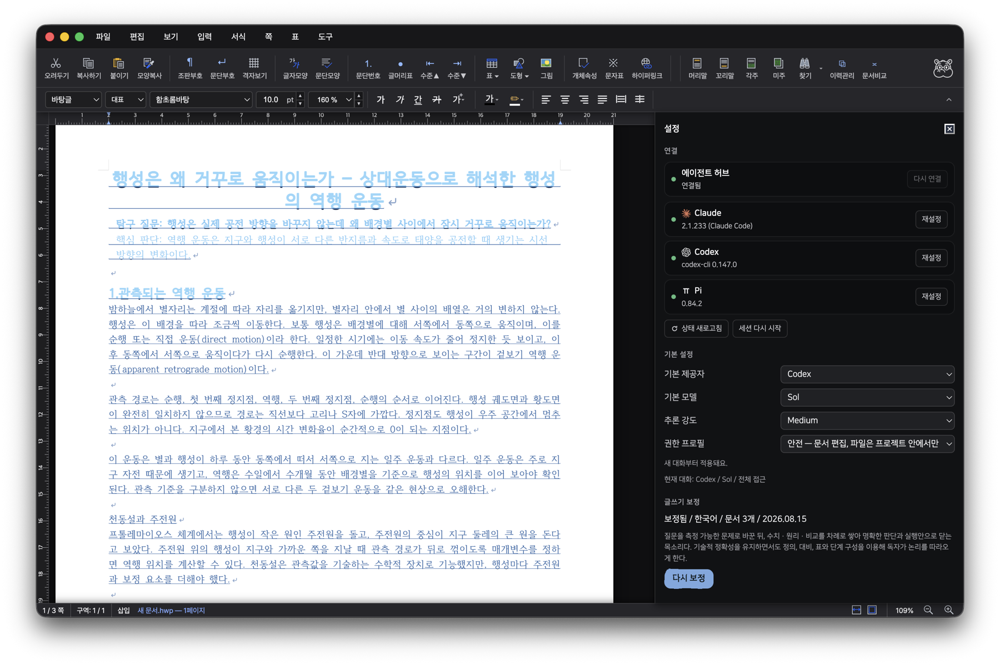

01
바이브라이팅
AI 시대도 벌써 3년, 이제 복붙 말고 조금 더 간단하고 편한 방법을 쓸 때가 되지 않았을까요? Rauhwpx를 통해 구상, 조사, 그리고 편집 후 디자인까지, 다 한곳에서 해결하세요

한글 파일 편집이랑 에이전트와의 대화, 한 화면에서 융합

기능
01
AI 시대도 벌써 3년, 이제 복붙 말고 조금 더 간단하고 편한 방법을 쓸 때가 되지 않았을까요? Rauhwpx를 통해 구상, 조사, 그리고 편집 후 디자인까지, 다 한곳에서 해결하세요

02
AI로 쓴 글, 이제 하나하나 검토하면서 수정할 필요 없어요. 직접 쓴 글 10페이지 정도만 학습시키면, 바로 사용자와 똑같이 말하고 쓸 거니까요.

03
학교나 직장에서 자주 쓰는 문서의 구조를 템플릿으로 미리 저장해 두면, 하나하나 첨부하지 않아도 계속 꺼내쓸 수 있어요
04
쪽 위에서 표를 바로 고치면 돼요. 안에 든 표도 그대로 남고, 품의나 공문처럼 칸이 많은 표도 깨지지 않아요.

공문
파일에서 공문/품의 서식을 열면 칸이 이미 있어요. 에이전트가 열린 페이지에서 채워요. 저장은 HWPX만 되고, HWP는 안 돼요.
지금 받는 v0.1.10 dmg에는 아직 없습니다. 온나라 인증 서식은 아니에요.
작업 흐름
/plan으로 자료조사랑 브레인스토밍을 통해 적고자 하는 것에 대한 뼈대를 잡고

계획 실행으로 에이전트에게 문서 작성을 넘기세요

한글 문서에 그대로!

연결
Codex, Claude 계정이나 OpenRouter API Key를 설정에서 연결하면 준비가 끝나요.
